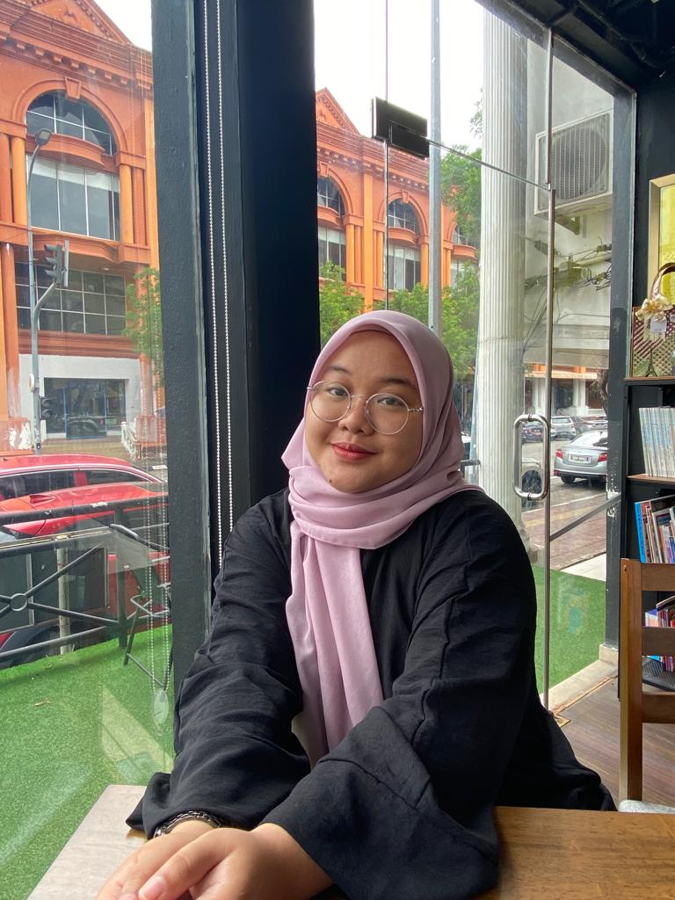

-Personal Details-
-About Myself-
" I am Nurfariha Yasmin binti Mokhtar, a 21-year-old student from Raub, Pahang, currently pursuing my studies at UiTM Cawangan Kelantan, Campus Kota Bharu. Among my four siblings, I am the only daughter. My hobbies include indulging in literature and crafting delightful desserts. As I look to the future, my aspirations involve becoming an economics lecturer and establishing my own dessert business. Given the opportunity for further education, I aim to attain a Ph.D. and be an inspiring lecturer. Making my family proud is a paramount goal for me. In terms of preferences, matcha holds a special place as my favorite drink; it's my go-to order whenever I visit a cafe. Additionally, my love for photography stems from a desire to encapsulate memories within images, allowing for sweet flashbacks to precious moments. "